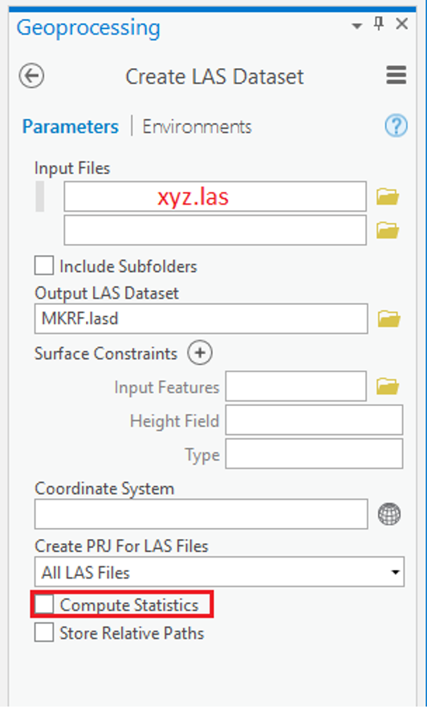
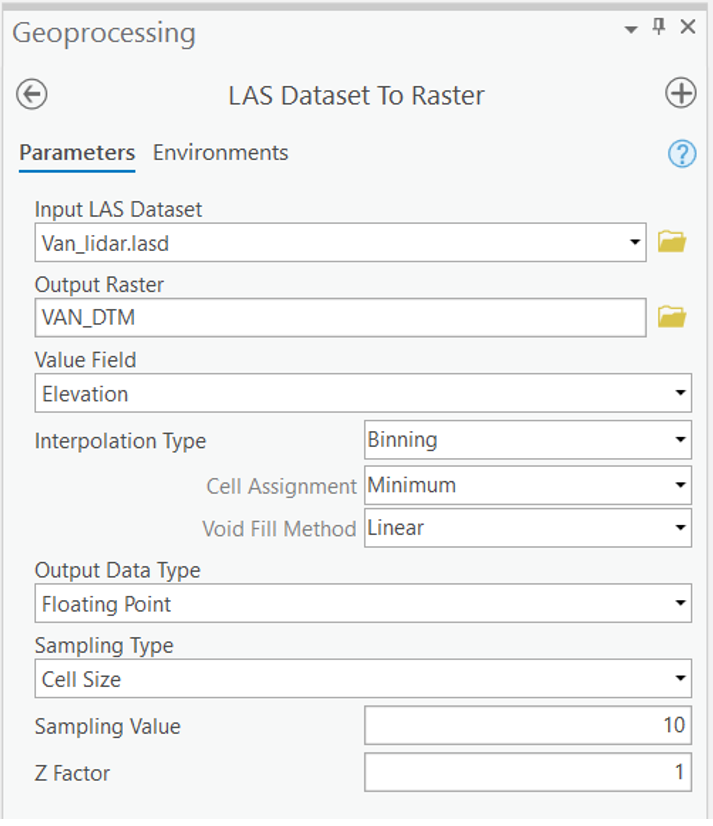
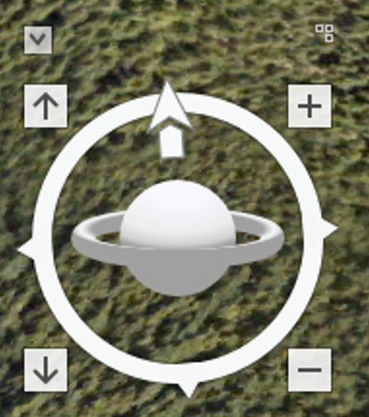

Lab 5 Geovisualization using LiDAR
Written by Francois du Toit
Lab Overview
The aim of this lab is to use LiDAR data from the City of Vancouver to create a Digital Terrain Model (DTM) and a Digital Surface Model (DSM). We will then investigate how these methods compare to one another, and explore their strengths and weaknesses. Additionally, we will explore 3D visualization in ArcGIS Pro using Scenes.
Learning Objectives
- Process LiDAR data to standard products
- Augment urban scences with LiDAR derivatives
Deliverables
- Answer all the questions given in the lab handout.
- A map of your DTM and DSM.
- Screenshots of your LiDAR visualizations.
Data
We will be working with LiDAR data collected over the City of Vancouver. There are two files associated with this lab:
- Vancouver_lidar.las: The LiDAR data file. LAS is the standard file type for LiDAR data
- Vancouver_Ortho.tif: An orthophoto of our study area, which was collected at the same time as the LiDAR data
- Information on LiDAR collection and specifications: https://opendata.vancouver.ca/explore/dataset/lidar-2018/information/
Task 1: Load and explore the LiDAR data
Step 1: ArcGIS Pro has several tools that we can use to view and analyse LiDAR point clouds. In order to view the dataset, we need to import it as a LAS Dataset. On the analysis tab, click the tools button and type ‘Create LAS dataset’ in the search box. Specify your input file as all of the .las files in the LidarVan folder this lab. Name the output LAS Dataset Van_lidar.lasd and specify a coordinate system (hint: look in the specifications website). Check the ‘Compute Statistics box’. Surface Constraints can be left blank, and we want to make sure that ‘All LAS Files’ are selected for ‘Create PRJ For LAS Files’.

Q2. What is the vertical datum for the las dataset?
Step 2: We can now add our LAS Dataset to a Map document (insert New Map). Depending on the zoom extent, you may only see the red bounding box of the las file; this isn’t an error, you just need to zoom in to see the actual points. Alternatively, you can open the dataset in a ‘Global Scene’, although due to the size of the point cloud this might cause some lag. The default display is that no point cloud filters are applied; if you want to view only ground points, right click on the file, navigate to ‘LAS Filters’, and click ‘Ground’. If you want to investigate what the city looks like, you can add the Vancouver orthophoto.
 Figure 2: Viewing and filtering the dataset
Figure 2: Viewing and filtering the dataset
Another way to explore the dataset is to use the Catalog. Right click Van_lidar.lasd and click on Properties. Here we can see some statistics of the point clouds, such as information regarding the Classification Codes and Returns Number.
Task 2: Create a Digital Terrain Model
Step 1: Now that we are familiar with the dataset, we can create a DTM using the easy to use built-in functions. To do so, search for the ‘LAS Dataset to Raster’ tool, and use your LAS Dataset as the input. Since we are interested in creating a terrain model, we want to use the binning interpolation type, and make sure that we use the minimum (i.e. the lowest) points in each cell assignment. Sampling Value refers to the resolution of the raster that we are creating – we want our raster to be 10 m x 10 m. Name this raster ‘VAN_DTM’.

Figure 3: Converting the LAS Dataset to Raster
Task 3: Create a Digital Surface Model (DSM)
Step 1: Right-click Van_lidar.lasd in the Contents pane and change the filter options to first returns.
Step 2: Right-click Van_lidar.lasd again and select Properties, then navigate to the LAS Filter tab on the left and uncheck “1 Unassigned” and “7 Low Noise” under Classification Codes. Press OK.
Step 3: Navigate back to the “LAS Dataset To Raster” tool.
- Output Raster: VAN_DSM
- Cell Assignment: Average
- Sampling Value: 10
Click Run and view your output in the map window (Figure 4).

Figure 4. Lidar derived DSM of UBC Vancouver Campus
Task 4: Create a map
Step 1: Switch ArcGIS Pro to Layout view. You may change the page orientation to landscape instead of portrait if you would like. To do so, go to File -> Page and Print Setup, and change the orientation to landscape.
Step 2: In ArcGIS Pro, we can insert as many map frames as we want into our map layout. In our case, we will need 2 maps in our layout, as well as some free space for legends and text. There will be one DTM and one DSM. Display each of these layers in their own map and place them appropriately in the layout. Each map should include only one raster, one of the following: DTM and DSM.
Step 3: Change the symbology for both layers from the default to something more visually appealing. Follow the instructions below to ensure that you apply the same symbology to both layers. Start with the elevations. Click on one of the layers representing the interpolated surfaces and select the Symbology tab. Change the Primary symbology to ‘Classify’. Set the number of classes to 7. You may change the color ramp to one that makes sense to you, but make sure that there is enough contrast between classes. Change the symbology of the other surfaces to match the first one (i.e. make sure to match break classes). Add a legend for each symbology definition (Elevation) to the map layout by clicking on a data frame and selecting Insert -> Legend from the top menu bar. Place them on the map layout in a way that makes sense (near the respective layers). Export the map to a PDF (Share -> Export Layout).
Include a PDF of your map in your final deliverables
Task 4: Exploring a scene
Step 1: The first thing that we will do is add a Local Scene (Insert New Map -> New Local Scene). Add Vancouver_Ortho.tif to the scene. We can navigate through the scene using the mouse, or the on-screen navigator (Figure 6). You can learn more about navigation in ArcGIS Pro here: https://pro.arcgis.com/en/pro-app/latest/help/mapping/navigation/navigation-in-arcgis-pro.htm

Take some time to play around and explore the scene. One thing we notice is that the imagery does not match the ‘ground’. This is because the ground in the scene is using the default global service, which has a resolution of between 10 and 30 meters. We need to create a custom ground surface to elevate the orthophoto.
Step 2: Create a higher resolution DSM. Filter the LAS dataset by first returns and toggle off returns classified as unassigned and noise as you did in Task 2. Using the ‘LAS Dataset to Raster’ tool, create a raster called ‘VAN_DSM2m’ with a resolution of 2 meters, binning the data by ‘Maximum’.
Step 3: In the Contents pane, right-click Ground, located below the Elevation Surfaces group layer. Click ‘Add Elevation Source’. Browse to the location of VAN_DSM2m and select it. You can now start to see how the surface features have been incorporated into the surface. Make sure to zoom in to look at areas with high relief and roads. Look at some of the trees on Main Mall. Why might these trees look strange?
Step 4: Sometimes it is useful to exaggerate height differences to show a particular aspect of your dataset. To do this, click on ‘ground’ and navigate to the ‘Appearance’ tab (on the top bar). You can play around with the vertical exaggeration here and see how data is displayed differently. You might also be interested in changing the lighting of the scene in order to show what your data looks like at a certain time. Right click on ‘Scene’ and select ‘Properties’ (on the left side of the screen) to access illumination properties. This section is where you can experiment with the lighting of your scene (for example you can set a date and time).
Step 5: Export a scene of your choice. With a figure caption, describe what we are looking at, and whether you changed the vertical exaggeration or illumination in the scene (Figure 7).

Figure 7: An example of a scene from UBC Campus.